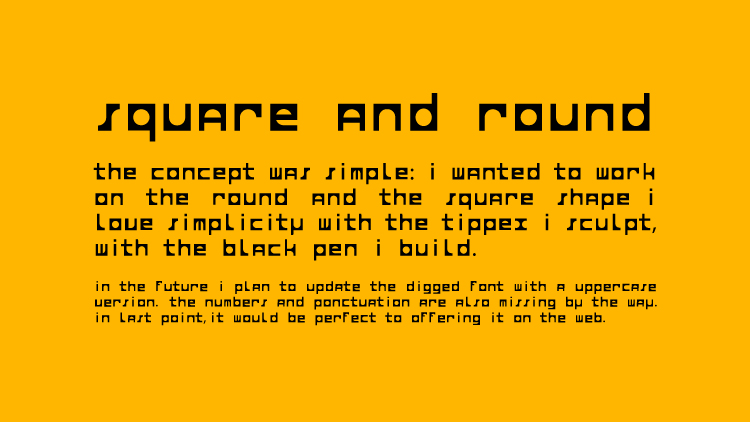
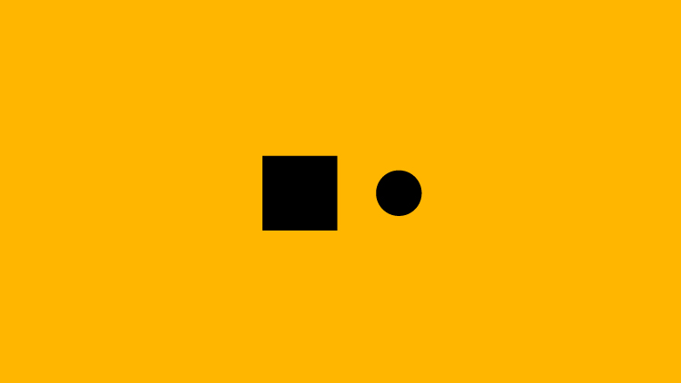
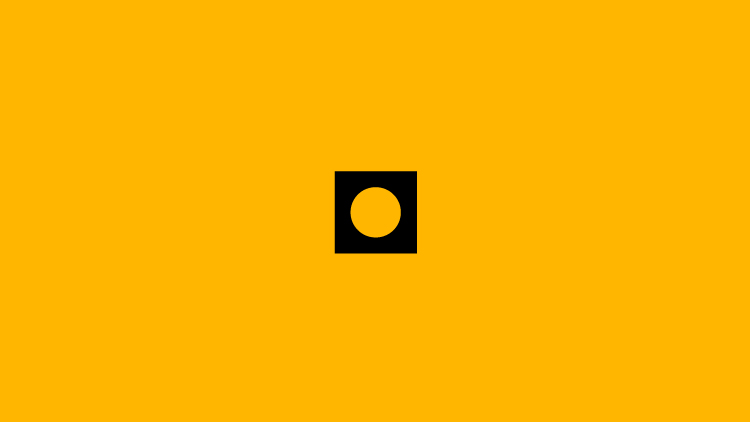
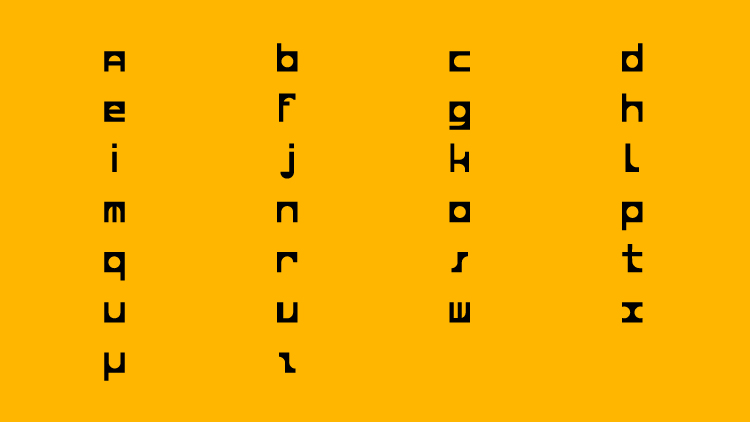
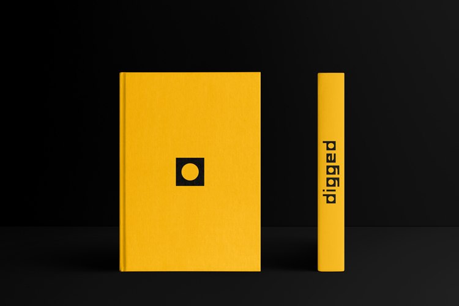

Digged
Typographie
Durant un atelier avec Redouan Chetouan, nous avons eu la chance de créer notre propre typographie. Un travail original, nouveau et très enrichissant. Pour commencer, nous avons reçu une feuille de papier sur laquelle était imprimée un mot : "abegno". À partir de ces 6 lettres, on peut construire un alphabet. Faites le test : dessinez un "p", faites lui une rotation de 180 degrés et vous obtenez un "d". Ainsi de suite...
Je souhaitais réaliser une typo géométrique, en travaillant sur le rond et le carré. J'ai donc commencé à utiliser un feutre noir pour créer les formes. Après les avoir rempli, j'ai sculpté ces aplats avec un tipex, peignant un rond blanc au sein d'un carré noir : ainsi j'obtenais un "o".
J'ai réalisé plusieurs affiches pour promouvoir ma propre typo, dans le cadre des journées portes ouvertes de mon école. En superposant les 26 lettres et en y ajoutant une opacité égale à 20% pour chacune : dès lors on peut voir que le rond et le carré sont les formes de base de mon travail.
Année
Décembre 2015
Read in English 🇬🇧